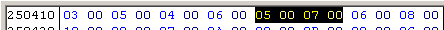
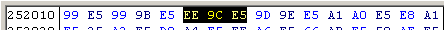
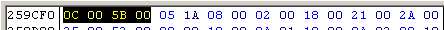
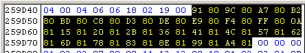
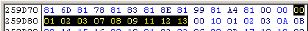
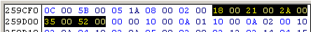
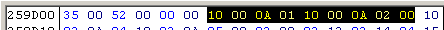
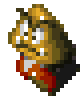
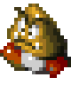
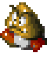

STEP 2: calculate mold pointer address
 |
[(byte 3,4) x 3] + $252000 = mold pointer address
[$0007 x 3] + $252000 = $252015 |
STEP 3: determine mold/sequence data addresses from mold pointer
 |
mold pointer + 2 = mold data
$259CEE(PC address) + 2 = $259CF0 |
STEP 4: determine mold set pointer address from byte 3,4
 |
(byte 3,4) + mold pointer = mold set pointer address
$005B + $259CEE = $259D49 |
STEP 5: determine mold function address from byte
 |
Goomba has 26 mold assignments (2 bytes each), as seen in the selection.
[(byte 1,2) AND $0FFF] + mold pointer = sprite GFX mold
[$8091 AND $0FFF] + $259CEE = $259D7F
bit 7 of byte 2 (80) means that it uses the gridplane format |
STEP 6: arrange 8x8 tiles into full sprite through function
 |
byte 1 = mold size
00 = 24x24
if following bits set on byte 1...
bit 4 = shift down 1 pixel
bit 5 = shift up 1 pixel
bit 6 = mirror
bit 7 = invert
byte 2 through 10 = 8x8 tile pointers (see image below for elucidation)
Goomba's mold data for all molds runs to $259E9C
|
STEP 2: calculate mold pointer address
|
[(byte 3,4) x 3] + $252000 = mold pointer address
[$0007 x 3] + $252000 = $252015 |
STEP 3: determine mold/sequence data addresses from mold pointer
|
mold pointer + 2 = mold data
$259CEE(PC address) + 2 = $259CF0 |
STEP 4: determine animation sequence address from byte 1,2
|
(byte 1,2) + mold pointer = animation sequence pointers address
$000C + $259CEE = $259CFA |
STEP 5: determine sequence data address from byte
 |
Goomba has 5 sequence assignments (2 bytes each), as seen in the selection
(byte 1,2) + mold pointer = sequence data
$0018 + $259CEE = $259D06
|
STEP 6: sequence data

   
|
every 2 bytes is a frame
byte 1 = frame delay
byte 2 = sprite mold to use for frame
10 = delay 16 frames
00 = use mold 1
0A = delay 10 frames
01 = use mold 2
10 = delay 16 frames
00 = use mold 1
0A = delay 10 frames
02 = use mold 3
00 = END SEQUENCE
|